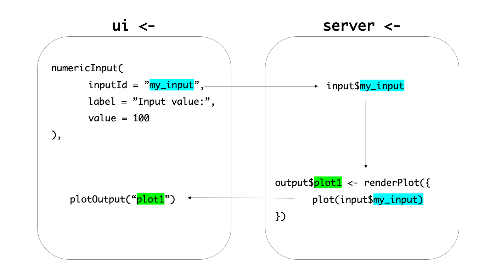

Chapter 2 데이터의 흐름
샤이니를 알려면 먼저 데이터의 흐름을 알아야 합니다. 샤이니는 한쪽의 데이터가 바뀌면 연결된 다른 데이터들도 함께 바뀌는 데이터 흐름을 가지고 있습니다. 이를 반응성(Reactivity)이라고 합니다. 이러한 데이터의 흐름은 ui와 server를 넘나들며 하나의 체인처럼 연결되어 있고 이것을 반응성 체인(Reactive chain) 이라고 표현합니다. 예를 들어 살펴보겠습니다. 직접 코드를 실행해보지 않아도 됩니다. 자세히 들여다 봐주세요.
library(shiny)
ui <- fluidPage(
numericInput(
inputId = "my_input",
label = "Input value:",
value = 100
),
plotOutput("plot1")
)
server <- function(input, output, session) {
output$plot1 <- renderPlot({
plot(input$my_input)
})
}
shinyApp(ui, server)numericInput()은input$my_input에value = 100이란 값을 부여합니다.renderPlot()함수는input$my_input에 지정된 값을 읽어 그래프를 그립니다.- 이는
output$plot1 <- renderPlot()이라는 객체에 지정됩니다. - 지정된
plot1은ui내에plotOutput("plot1")함수로 전달되어 UI에 그래프를 출력합니다.

Figure 2.1: 샤이니 데이터들은 반응성 체인으로 연결되어 있다.
비록 복잡하고 조금은 추상적인 내용이지만 샤이니에서 반응성 체인의 원리를 이해하는 것은 매우 중요하기 때문에 여러번 읽으면서 꼭 이해하시길 바랍니다. 이번 고개만 잘 넘기면 이제 기술적인 부분만이 남았습니다. 화이팅!